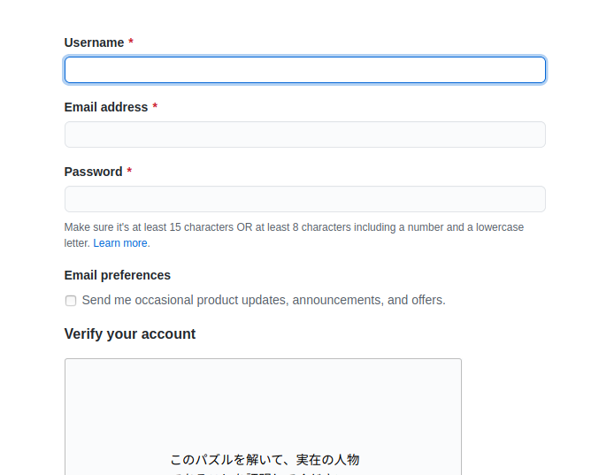

githubアカウントを作る
まず、GitHubのアカウントを作る。
ユーザー名、メールアドレス、パスワードを指定して、アカウント作成ボタンを押す

gitコマンドが使えるようにする。Debian系OSは下記コマンドでインストール
sudo apt install gitmacOSの方は下記コマンドでインストール
sudo brew install gitgit configでgitコマンドを打つ人の名前と連絡先を登録する。(メールアドレスは適当でOK)
git config --global user.name "Seiya Asahina"
git config --global user.email "seiya@asahina"
git config --global color.ui true
設定の確認。下記のように表示されればOK
HTMLファイルを作り、githubにプッシュする
適当なディレクトリに適当なindex.htmlファイルを作る。そのディレクトリでgitコマンドを実行して初期化、コミットする
vi ./index.html
git init
git add .
git commit -m "first commit"
GitHub側ではリポジトリを作る。
リポジトリ名は、ユーザーID.github.ioとする。(注:画像は既に作られているアカウントのため、警告が出ている)
リポジトリが作られた後は、ローカル環境で管理しているHTMLファイルと、リモートリポジトリを関連付け、プッシュする
git remote add origin https://github.com/(ユーザーID)/(リポジトリ名)
git push -u origin master
リポジトリの公開設定を変更する
ウェブページをプッシュしたリポジトリの設定を変更して、インターネットに公開することができる。
リポジトリのsettingsタブをクリック
Sourceの部分のタブをクリックして公開するブランチを指定(masterでOK)。Saveをクリックする。
『Your site is ready to be published at 【サイトのURL】』に公開されたページのURLがあるのでそこをクリックして閲覧できる。